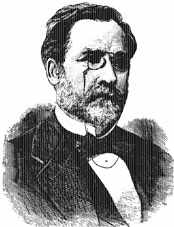

12 LOUIS PASTEUR 1822-1895
Ahli kimia dan biolog
Perancis, Louis Pasteur, umumnya dianggap jempolan bin
jempolan dalam sejarah obat-obatan. Pasteur memang
menyuguhkan banyak sumbangan pikiran penting bagi
kepentingan ilmu pengetahuan. Tetapi yang paling menonjol
pada dirinya ialah pendapatnya tentang teori baksil penyakit
dan pengembangan teknik pencegahan lewat penyuntikan.
Pasteur lahir di kota Dole tahun 1822, bagian timur
Perancis. Sebagai mahasiswa di Paris dia memperdalam ilmu
pengetahuan. Kegeniusannya belum tampak tatkala jadi
mahasiswa bahkan salah seorang mahagurunya menganggap
Pasteur "sedang-sedang" saja dalam ilmu kimia. Baru sesudah
dia meraih gelar Doktor di tahun 1847, Pasteur membuktikan
ucapan profesornya keliru besar. Penyelidikannya tentang
asam traktat (tartaric acid) pada kaca mengangkat derajatnya
ke tingkat ahli kimia yang tersohor di saat umurnya baru dua
puluh enam tahun.
Kemudian dia mengalihkan perhatiannya kepada penyelidikan
tentang peragian dan membuktikan bahwa proses ini persis
seperti proses yang terjadi pada sejenis mikro organisme
lainnya dapat memprodusir hasil-hasil yang tidak dikehendaki
dalam hal peragian minuman. Pendapat ini segera menuntunnya
kegagasan lain bahwa semacam mikro organisme dapat pula
menghasilkan hal-hal yang tidak diharapkan dan dapat membawa
pengaruh baik terhadap manusia maupun hewan.
Pasteur bukanlah orang pertama yang memasalahkan teori
baksil penyakit. Hipotesa serupa telah pernah dikembangkan
lebih dulu oleh Girolamo Fracastoro, Friedrich Henle dan
banyak lainnya lagi. Tetapi, Pasteurlah yang paling menonjol
dalam hal teori kuman penyakit yang dibuktikannya lewat
serentetan percobaan dan demonstrasi yang merupakan faktor
utama dan meyakinkan masyarakat cerdik pandai bahwa teorinya
benar.
Apabila penyakit disebabkan oleh baksil, tampaknya masuk
akal bahwa dengan mencegah masuknya baksil itu ke dalam
tubuh manusia, penyakit itu bisa dihindari. Karena itu
Pasteur menekankan pentingnya metode antiseptik buat para
dokter, dan dia punya pengaruh besar terhadap Joseph Lister
yang memperkenalkan cara antiseptik kedalam bidang
pembedahan.
Bakteri yang berbahaya dapat memasuki tubuh manusia lewat
makanan dan minuman. Pasteur mengembangkan teknik (biasa
disebut pasteurisasi) untuk memusnahkan mikro organisme
dalam minuman. Teknik ini, jika dipraktekkan, dapat
membinasakan susu yang kejangkitan hama sebagai penyebab
infeksi.
Tatkala umurnya mendekati pertengahan lima puluhan,
Pasteur beralih lagi perhatiannya kepada penyelidikan baksil
penyakit ternak, sejenis penyakit infeksi serius yang
menyerang binatang ternak dan binatang-binatang lain, tidak
kecuali manusia. Pasteur mampu menunjukkan bahwa sejenis
baksil menjadi sebab sesuatu penyakit. Karya lebih penting
lainnya ialah pengembangan tekniknya memproduksi corak
baksil penyakit ternak yang sudah dilemahkan. Dengan cara
disuntikkan ke tubuh ternak, baksil penyakit yang sudah
dilemahkan ini dapat menimbulkan penyakit yang ringan dan
tidak mengakibatkan fatal sehingga memungkinkan
ternak-ternak itu memperoleh kekebalan untuk menghadapi
penyakit normal. Demonstrasi Pasteur di depan umum mengenai
efektivitas teknik mengebalkan hewan dari baksil penyakit
ternak menimbulkan kegemparan. Segera disadari bahwa metode
umum dapat digunakan untuk pencegahan rupa-rupa penyakit
masyarakat.
Pasteur dalam laboratoriumnya
Penemuan pribadi Pasteur yang paling termasyhur adalah
pengembangan teknik penyuntikan terhadap manusia untuk
mencegah penyakit Rabies yang ditakuti. Lain-lain ilmuwan,
dengan meniru gagasan dasar Pasteur, sejak itu mengembangkan
vaksin untuk mencegah lain-lain penyakit berat seperti tifus
dan poliomyelitis.
Pasteur, seorang yang suka kerja luar biasa banyak,
menciptakan penemuan-penemuan kurang penting namun tetap
berguna bagi keharuman namanya. Adalah tak lain dari
penemuannya --melebihi arti penemuan orang-orang lain-- yang
secara meyakinkan mendemonstrasikan bahwa mikro organisme
tidak tumbuh lewat pembiakan. Pasteur juga menemukan
fenomena anaerobiosis, misalnya sesuatu mikro organisme
dapat hidup dalam ketiadaan udara maupun oksigen. Karya
Pasteur mengenai penyakit ulat sutera mendatangkan nilai
komersial yang tinggi. Penemuan lainnya adalah pengembangan
vaksin untuk mencegah berjangkitnya penyakit kolera pada
ayam dan penyakit yang menyerang unggas. Pasteur
menghembuskan nafas terakhir di dekat Paris tahun 1895.
Orang sering membuat bandingan antara Pasteur dengan
Edward Jenner, ahli fisika Inggris yang mengembangkan vaksin
untuk pencegahan cacar. Meskipun Jenner melakukannya 80
tahun sebelum Pasteur, saya menganggap arti penting Jenner
tidaklah sebesar Pasteur, karena sistem pengebalannya
berlaku hanya untuk satu jenis penyakit saja, sedangkan
sistem Pasteur dapat --dan telah terbukti-- ampuh untuk
mengebalkan terhadap banyak penyakit.
Terhitung sejak pertengahan abad ke-19, kebutuhan hidup
penduduk dunia nyaris bertambah dua kali hpat. Pertambahan
kebutuhan yang bukan kepalang cepat dan beraneka luas
jangkauannya ini lebih hebat dari apa yang pernah terjadi di
sepanjang sejarah ummat manusia. Akibatnya, pengetahuan
modern dan dunia kedokteran sebetulnya telah menyuguhkan
kita masa kehidupan yang kedua. Apabila penambahan jangka
perpanjangan ini dapat dihubungkan dengan semata-mata karya
usaha Pasteur, saya tidak ragu dan bimbang lagi
menempatkannya pada tingkat pertama dalam daftar urutan buku
ini. Bagaimanapun, sumbangan Pasteur begitu mendasarnya
sehingga tak perlu dipertanyakan lagi bahwa Pasteur punya
saham besar dalam hal mencegah angka kematian pada akhir
abad ini. Dan karena itu Pasteur layak ditempatkan dalam
urutan tinggi daftar buku ini.
|